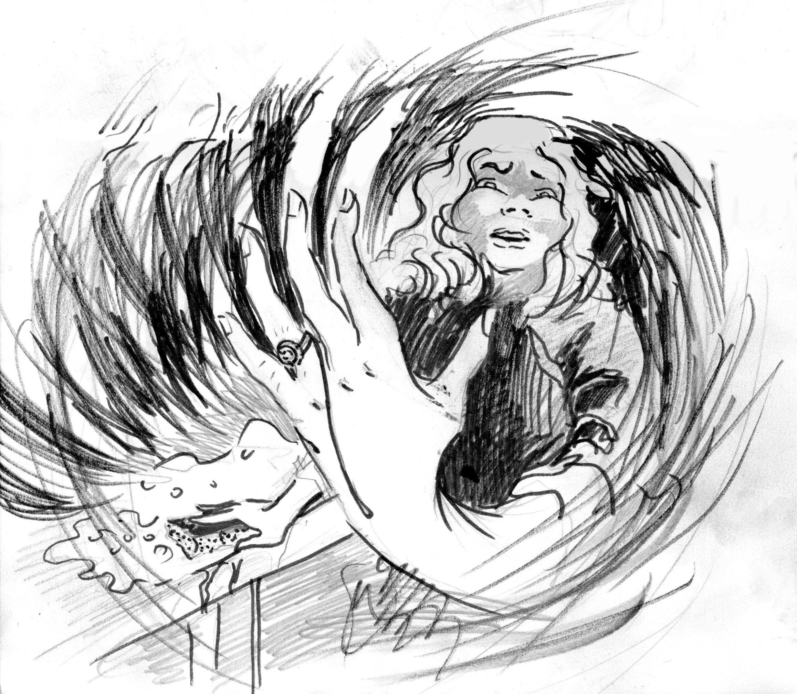

A short time ago in a nearby neighborhood lived an extraordinary girl. She was tall, with smooth cappuccino skin and rich black hair that could be mistaken for strands of silk. Her perfect posture, shining smile, and kind eyes crafted a regal aura around her. Her name, Grace, suited her perfectly.
But it was not Grace's beauty which made her universally loved; she possessed the most charming personality. She was affable—always interested in any conversation regardless of the triviality of the matter. She was humorous—could always find fun in the dullest moments. Most importantly, she was incredibly intelligent.
In this moment of her life, Grace was in high school. She was preparing for her final examinations. These exams would be the ultimate deciding factor for her secondary education. Though she wasn't the smartest student in school, with adequate preparation, there wasn't a problem Grace couldn't handle.
Grace was very close to her mother and in recent times, as her mother had been diagnosed with an illness, the two had grown closer. Most mornings she ate breakfast with her beloved mother, but today, the day before the exam, Grace planned on getting to school early. On her way to school, Grace picked up a fresh, hot coffee for her teacher from their favorite cafe. Grace's teacher was her mentor and friend. She had been Grace's mentor for the last four years, and today she was going to meet Grace early in the morning to help her with some last-minute exam questions.
The two spent much of the morning in the teacher's office reviewing questions. As the afternoon arrived, Grace's teacher began to feel ill. Unable to shake the feeling, the teacher excused herself to the restroom. When the teacher left, Grace waited for a few minutes. Then, without hesitation, Grace rummaged through her teacher's purse, found her keys, unlocked the first locked drawer on the desk, removed the final exam, took photos with her camera phone, placed it back in the drawer, locked the drawer, and returned the keys to the purse. When the teacher returned minutes later, she apologized to Grace and explained that she was feeling very queasy and would not be able to continue the review. Grace left the office with a frown on her face. When the door closed, the frown turned into a smirk because her plan had worked. Grace had taken some of her mother's medicine and ground it into her teacher's coffee.
A few weeks passed, and the exam results were released. Grace had placed above every other student in the school. In fact, she had done so well that there was a significant margin between her and the brightest student in the school. Grace's teacher grew suspicious and confronted her. Grace denied politely, but the teacher did not believe her. She could not prove Grace's dishonesty, but she knew Grace was the only one alone in the office the day prior to the exam. She was not to trust Grace again.
Since then, some years had passed. Grace attended university, fell in love with a cunning young classmate with rosy lips and a stern jaw, and graduated at the middle of her class to live happily ever after.
In their happily ever after, Grace proposed to her partner and they moved to the big city to search for jobs. Grace's mother, whose relationship with her had whittled while Grace was in school, was deeply saddened that her daughter was moving away from home but was delighted by Grace's engagement to a loving partner.
On their first day in the big city, Grace and her partner went shopping for rings. After hours of searching, Grace and her partner fell in love with a one-of-a-kind set of gold rings handcrafted to coil around their fingers. They were leagues out of their price range, but Grace, who had an interview for a very prestigious finance job the next day, knew that she would soon have more than enough money to afford them. She gladly purchased the ring for her partner and they continued their happily ever after.
The job Grace wanted was highly coveted and even more so selective. Her recruiter demanded that Grace prove her business skills and proposed a test. She noticed that Grace was wearing a beautiful serpentine ring so she asked her about it. Grace told her that her ring was one of a pair of handcrafted engagement rings. Fascinated, the interviewer proposed that if Grace was able to convince her fiancé to sell the other ring back to Grace, she would have the job. Without further response Grace politely thanked her interviewer and left.
A few weeks passed and Grace got married. One day after dinner, while her partner was washing dishes, Grace went to her back yard, picked up a large stone, walked to the second-floor bedroom, and dropped the stone on her car. Grace's partner, frightened by the noise, turned off the faucet and went out to investigate. During the distraction, Grace picked up her partner's ring—which she had removed to wash the dishes—and replaced it with a carefully crafted copper replica. The next day, Grace got the fancy finance job.
In the weeks following, Grace was barely home. She constantly stayed away on business trips and worked long hours to get a promotion. In the months Grace was missing, Grace's partner found friendship and comfort in Grace's mother. Then, in a week that came like a storm, Grace's mother passed away from her ongoing sickness. Grace, as was usual for her, was away on a trip. Grace's loving partner handled all responsibilities while she awaited her return. In preparation for a memorial service, during this stressful week of sleepless nights, Grace's partner began obsessively cleaning their home and forgot to remove her ring. While scrubbing the counter, she noticed a streak of green running down the back of her hand. It seemed that the detergent had acted as a catalyst, turning the ring patina green. The stain snaked down her finger. Upon closer inspection she noticed the ring was copper. She was certain it was not such before.
When Grace returned at the end of the week, Grace's partner confronted her. Grace denied any knowledge of it being different, but her partner did not believe her. Grace's partner knew that Grace was the only person who had access to the ring.
The next day Grace woke up to a prestigious diploma, a fancy new job, and an empty house.
Acknowledgements: I'd like to acknowledge my family and friends, and the editor-in-chief Armaan
Dark Mode!